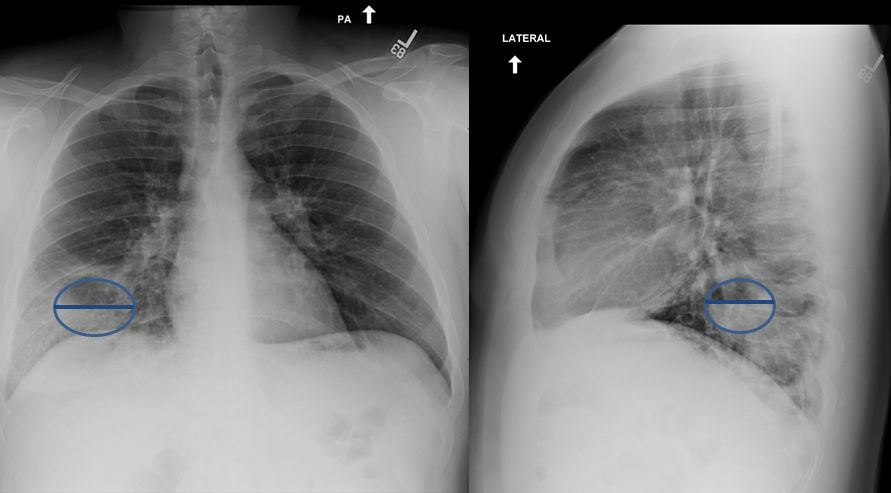

| PBL Chest X-ray 3 |
|  |
| There is an abscess in the right lower lobe. The lower part of the abscess is filled with fluid whereas the upper portion contains gas. The fluid is able to flow and is more dense than gas. This creates the horizontal line demonstrating an “air-fluid level. It need not be half full of fluid. |
|